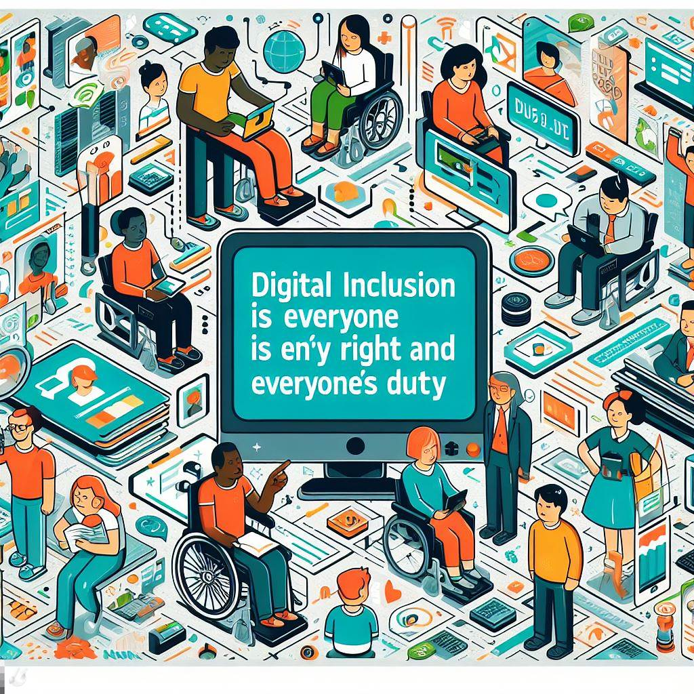

A inclusão digital é um direito de todos e um dever de todos.

No entanto, sabemos que nem todos têm acesso às tecnologias digitais, seja por falta de infraestrutura, de recursos financeiros, de habilidades ou de conhecimento. Essa situação gera uma exclusão digital, que afeta principalmente as pessoas com deficiência e as pessoas de baixa renda, que já enfrentam outras formas de discriminação e desigualdade social.
A exclusão digital impede que essas pessoas possam usufruir dos benefícios do mundo digital, como:
Acessar informações e serviços públicos e privados, como saúde, educação, cultura, transporte, segurança, entretenimento, etc.
Comunicar-se com familiares, amigos, colegas e outras pessoas, por meio de redes sociais, aplicativos, e-mails, etc.
Aprender novas habilidades e conhecimentos, por meio de cursos, tutoriais, vídeos, podcasts, etc.
Trabalhar e gerar renda, por meio de plataformas, aplicativos, sites, etc.
Expressar suas opiniões, ideias, sentimentos e criatividade, por meio de blogs, vlogs, podcasts, etc.
Participar da vida política e social, por meio de votações, consultas, petições, manifestações, etc.
Por isso, é fundamental promover a inclusão digital para pessoas com deficiência e baixa renda, para que elas possam ter mais autonomia, dignidade, qualidade de vida e desenvolvimento humano.
Esse é o objetivo do nosso site: mostrar a importância da inclusão digital para esses grupos, compartilhar experiências, dicas, recursos e iniciativas que possam facilitar e ampliar o acesso às tecnologias digitais, e estimular a participação e a colaboração de todos nessa causa.
Queremos que o nosso site seja um espaço de informação, conscientização, inspiração e mobilização, para que juntos possamos construir uma sociedade mais justa, inclusiva e digital para todos.
Se você se identifica com essa proposta, Seja Bem-Vindo ao nosso site! Aqui você vai encontrar conteúdos sobre:
O que é a inclusão digital e por que ela é importante para a sociedade e para a economia.
Qual é o cenário da inclusão digital no Brasil e no mundo, quais são os desafios e as oportunidades que ela apresenta.
Quais são as iniciativas e os projetos que promovem a inclusão digital, tanto do governo quanto da iniciativa privada e da sociedade civil.
Quais são os benefícios e os impactos da inclusão digital para as pessoas, especialmente para as mais vulneráveis e excluídas socialmente.
Como você pode participar e colaborar com a inclusão digital, seja como usuário, como produtor ou como difusor de conteúdo digital.
Esperamos que você goste do nosso site e que ele seja útil para você. Se você tiver alguma dúvida, sugestão ou comentário, entre em contato conosco. Estamos à disposição para ouvir você e melhorar o nosso trabalho.